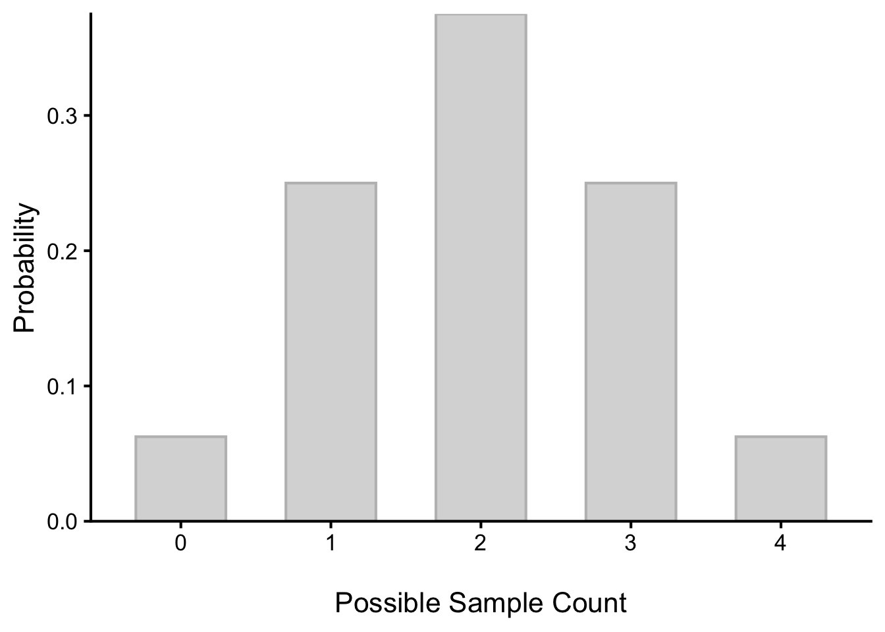
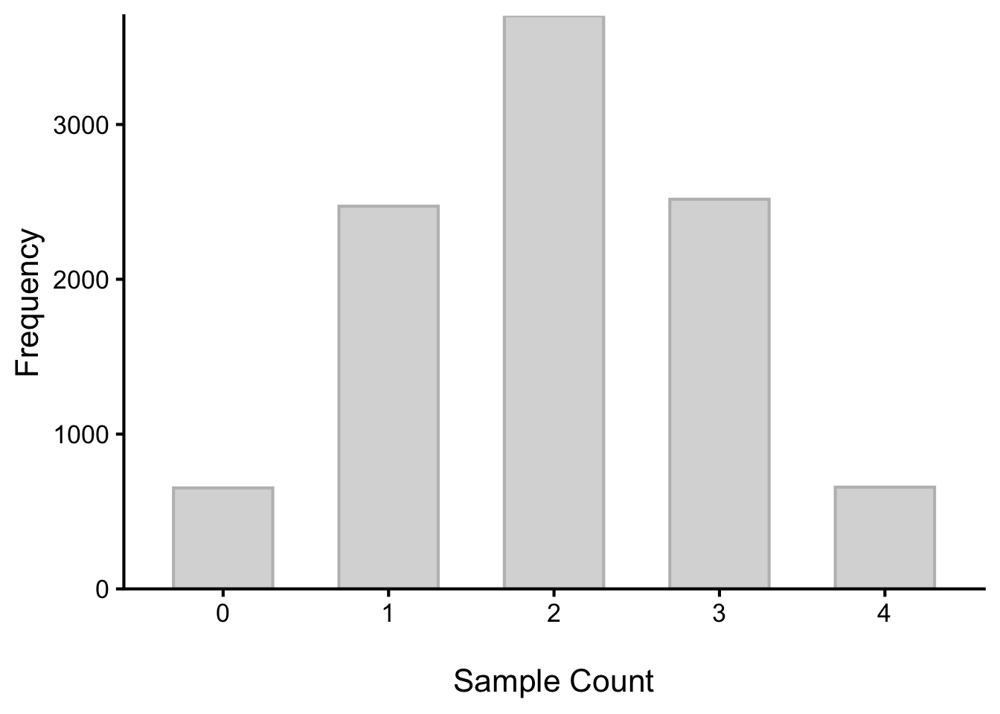
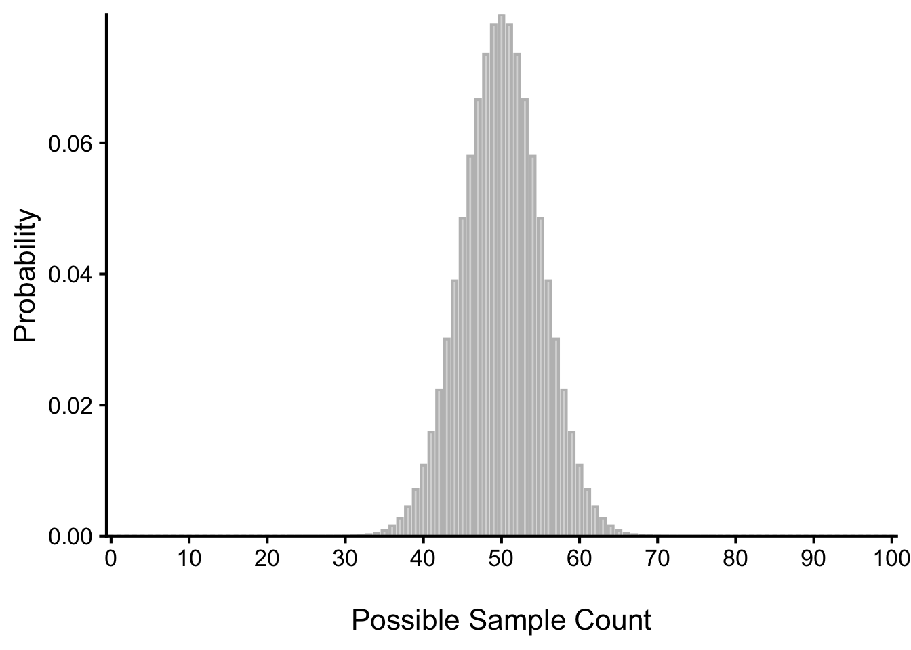

Ch.6: Estimating the Parameter
Learning Objectives
1 Populations and Samples
In Psychological research, we are usually interested in understanding a specific group of people. This group is known as the population of interest, or simply the population. The population is the collection of all people who have some characteristic in common; it can be as broad as “all people” if we have a very general research question about human psychology, or it can be extremely narrow, such as “all psychology majors at small liberal arts colleges” if we have a specific group in mind.
In statistics, we often rely on a sample: a subset of the population that we can actually collect data from. If you are commissioned to examine how the American people feel about a new policy, it is not practical or possible to ask every single American their opinion. Instead, we ask a relatively small number of Americans and draw inferences about the entire country from their responses. There are two issues to consider: the representativeness of the sample and the size of the sample.
1.1 Representativeness of the Sample and Sampling Bias
As we touched on in Chapter 1, in choosing a sample, it is crucial that it not over-represent one kind of people from the population. For example, in a survey of American’s attitude toward a new policy, something would be wrong with our sample if it happened to be made up entirely of college students. If the sample held only college students, it could not be used to infer the attitudes of other Americans. Inferences from statistics are based on the assumption that sampling is representative of the population. If the sample is not representative, then the possibility of sampling bias occurs. Sampling bias means that our conclusions apply only to our sample and are not generalizable to the full population. If we are beginning research into a completely unstudied area, we may sometimes take some shortcuts to quickly gather data and get a general idea of how things work before fully investing a lot of time and money into well-designed research projects with proper sampling. This is known as convenience sampling, named for its ease of use. In limited cases, such as the one just described, convenience sampling is okay because we intend to follow up with a representative sample.
1.2 Sample Size and Sampling Error
A population is described by a parameter; the parameter is the true value of the descriptive in the population, but one that we can never know for sure. For example, the Bureau of Labor Statistics reports that the average hourly wage of chefs is $23.87. However, even if this number were computed using information from every single chef in the United States (making it a parameter), it would quickly become slightly off as one chef retires and a new chef enters the job market. Additionally, as noted above, there is virtually no way to collect data from every single person in a population. In order to understand a variable, we estimate the population parameter using a sample statistic. Here, the term statistic refers to the specific number we compute from the data (e.g., the mean). A sample statistic is an estimate of the true population parameter.
Even if our sample is representative of the population, our estimate will not be perfect. Even the best sample will be somewhat off from the full population, and there will always be some discrepancy between the parameter and the statistic we compute to estimate it. This discrepancy is known as sampling error. Just by a fluke of chance, our sample may have a slightly higher or lower mean than the population.
But we can reduce the amount of sampling error by increasing our sample size. In the example of the average hourly wage of chefs, if we only sampled 10 chefs, we would expect a lot of variability in our sample mean. Maybe we just happened to find 10 highly paid chefs. Next time we ask another 10 chefs and get their average, the central tendency in the new sample will vary a lot from the earlier sample. However, if we sampled 100 chefs, we would expect less variability in our sample mean. If we sampled 1,000 chefs, we would expect even less variability in our sample mean. The larger the sample size, the more likely it is that our sample statistic will be close to the true population parameter. In the pigeon example, if we asked 4 pigeons a question, all 4 pigeons giving the correct answer is not that surprising and can happen by chance. However, in the 1000 pigeon example, if they were just guessing, it would be very unlikely that all 1000 pigeons would give the correct answer. The larger the sample size, the more likely it is that our sample statistic will be close to the true population parameter.
1.3 Individual Scores, Sample Statistics, and Population Parameters
Most of what we have dealt with so far has concerned individual scores grouped into samples, with those samples being drawn from and, hopefully, representative of a population. We saw how we can understand the location of individual scores within a sample’s distribution via z scores, and how we can extend that to understand how likely it is to observe scores higher or lower than an individual score via probability.
Inherent in this work is the notion that an individual score will differ from the mean, which we quantify as a z score. All of the individual scores will differ from the mean in different amounts and different directions, which is natural and expected. We quantify these differences as variance and standard deviation. Measures of spread and the idea of variability in observations is a key principle in inferential statistics. We know that any observation, whether it is a single score, a set of scores, or a particular descriptive statistic will differ from the center of whatever distribution it belongs in.
This is equally true of things outside of statistics and format data collection and analysis. Some days you hear your alarm and wake up easily, but other days you need to hit snooze a few (dozen) times. Some days traffic is light, but other days it is very heavy. Some classes you are able to focus, pay attention, and take good notes, but other days you find yourself zoning out the entire time. Each individual observation is an insight but is not, by itself, the entire story, and it takes an extreme deviation from what we expect for us to think that something strange is going on. Being a little sleepy is normal, but being completely unable to get out of bed might indicate that we are sick. Light traffic is a good thing, but almost no cars on the road might make us think something is going on, like a floodwatch or road closure.
All of these principles carry forward from scores within samples to samples within populations. Just like an individual score will differ from its mean, an individual sample mean will differ from the true population mean. We know ahead of time that if we collect data and compute a sample, the observed value of that sample will be at least slightly off from what we expect it to be based on our supposed population mean; this is natural and expected due to sampling error. However, if our sample mean is extremely different from what we expect based on the population mean, there may be something going on. In hypothesis testing, we are asking whether our observed difference is within the range of diffrence expected by sampling error, or whether it is unlikely to have occured by chance alone.
Key Takeaways
- Increasing the sample size reduces the amount of sampling error.
- Increasing the sample size does not reduce the amount of variability in individual scores.
2 Estimating Counts
2.1 Sampling Distribution of Sample Counts
2.1.1 Theoretical Distributions of Sampling Error
Remember that in the binomial distribution over the possible counts of correct pigeon responses, we could compute what the probability of observing a certain number of correct responses was. That was a theoretical distribution of the sample “counts” (Figure 1). This theoretical distribution shows our “expected” variability in the sample counts. If 10,000 different researchers were to sample 4 pigeons (sample size = 4), the empirical distribution of the sample counts would look like a theoretical, binomial distribution (Figure 2). Some researchers may see all four pigeons correct due to sampling error, and we expect that to happen about 6.25% of the time (out of 10,000 samples). In our simulated 10,000 samples (studies), we see a similar pattern, where 657 samples have all four pigeons correct (Table 1).

| Correct.Pigeons | Probability | Frequency |
|---|---|---|
| 0 | 0.0625 | 652 |
| 1 | 0.2500 | 2472 |
| 2 | 0.3750 | 3702 |
| 3 | 0.2500 | 2517 |
| 4 | 0.0625 | 657 |
2.1.2 Larger Sample Sizes, Smaller Sampling Error
If we increase the sample size to 100 pigeons, our sampling error is reduced, and it is much less likely to get the counts of correct responses that are far from the expected value of 50 (Figure 3). Some researchers may see all 100 pigeons correct due to sampling error, but that chance is less than one in a trillion.
As the sample size increases, another interesting thing happens. The distribution of sample counts becomes much more like a normal distribution. This will be important to keep in mind as we move forward, because the normal distribution is a very useful distribution in statistics.

So far, we have been looking at the theoretical distribution of counts, which follows the rules of probability. When we estimate the population count, we base that estimate on the sample count, while also considering the sampling error associated with that estimate.
Can we do something like this for the mean?
3 Estimating the Mean
3.1 The Sampling Distribution of Sample Means
As we have seen with the distribution of sample counts, we can also consider the distribution of sample means. We need the theoretical distribution of how much sample means vary from the true population mean, due to sampling error. If we were to take many samples, all of the same size, and calculate the mean of each of those, we could put those means together to form a distribution. This new distribution is, intuitively, known as the distribution of sample means. For our purposes, understanding the distribution of sample means will be enough to see how all other sampling distributions work to enable and inform our inferential analyses, so these two terms will be used interchangeably from here on out. Let’s take a deeper look at some of its characteristics.
3.1.1 The Central Limit Theorem
We have already seen that the distribution of sample counts becomes more normal as the sample size increases. The same is true for the distribution of sample means. This is known as the Central Limit Theorem. The Central Limit Theorem states that, regardless of the shape of the population distribution of individual scores, if we take the mean of the scores in a large enough sample, those sample means will be normally distributed. In other words, as long as we have a decent sized sample (roughly 30+), the distribution of sample means will be approximately normal, no matter what shape your population distribution is. Even if the individual scores are bimodal, skewed, or spiky, or just about anything else, when you average across many scores, the distribution of those averages will be normal – although when the population distribution is extremely skewed or looks very different from a normal distribution, we may need a larger sample size to make the sampling distribution of sample means normal.
This is a very important property of the distribution of sample means, because it allows us to use the normal distribution to make inferences about how exactly unlikely our sample mean is, just like you found out about how exactly unlikely a single extraversion score is.
Normal distributions are defined by their mean and standard deviation – where’s the peak, and how spread out is the distribution? That means, to know the probability of observing sample means as extreme as our sample mean or more extreme, we need to know the mean and the standard deviation of the distribution of sample means. In terms of sample means, what we need to know is the typical sample mean, and how much variability we can expect in the sample means. Very helpfully, the Central Limit Theorem tells us how to find both of those:
- The mean of the sampling distribution (i.e., the mean of the sample means) is the same as the mean of the population (\(\mu_M\)).
#\[ \mu_M = \mu\]
- The standard deviation of the sampling distribution (i.e., the standard deviation of the sample means \(\sigma_M\); called standard error of the mean (SEM)) gets smaller as the sample size increases. \[\sigma_M = \frac{\sigma}{\sqrt{n}}\]
where \(\sigma\) is the standard deviation of the population, and \(n\) is the sample size.
Notice that the sample size is in the SEM equation. As stated above, the sampling distribution refers to samples of a specific size. That is, all sample means must be calculated from samples of the same size n, such as n = 10, n = 30, or n = 100. This sample size refers to how many people or observations are in each individual sample, not how many samples are used to form the sampling distribution. This is because the sampling distribution is a theoretical distribution, not one we will ever actually calculate or observe. Figure 4 displays the principles stated here in graphical form.

Because the standard deviation of the sampling distribution of sample means gets smaller as the sample size increases, we can see that larger samples will give us more precise estimates of the population mean. This is called the law of large numbers. The law of large numbers states that as the sample size increases, the sample mean will get closer and closer to the population mean. This is illustrated in Figure 5.